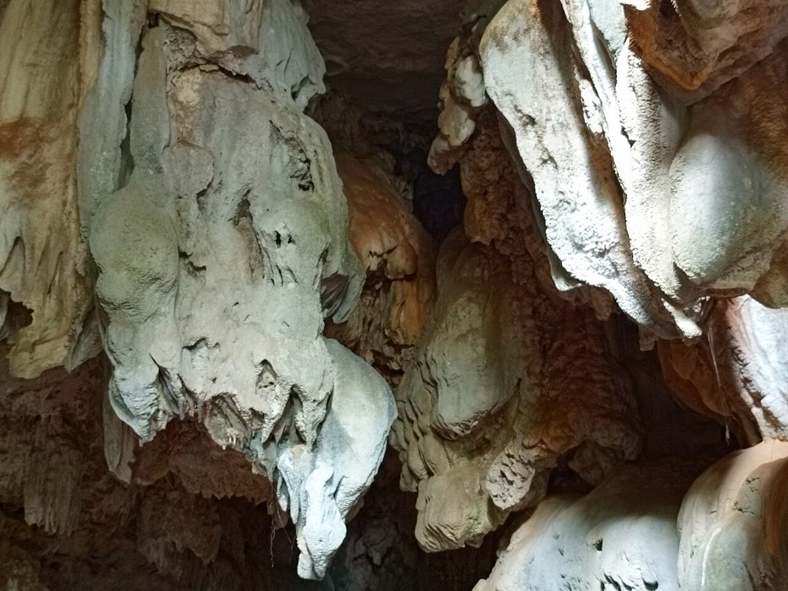
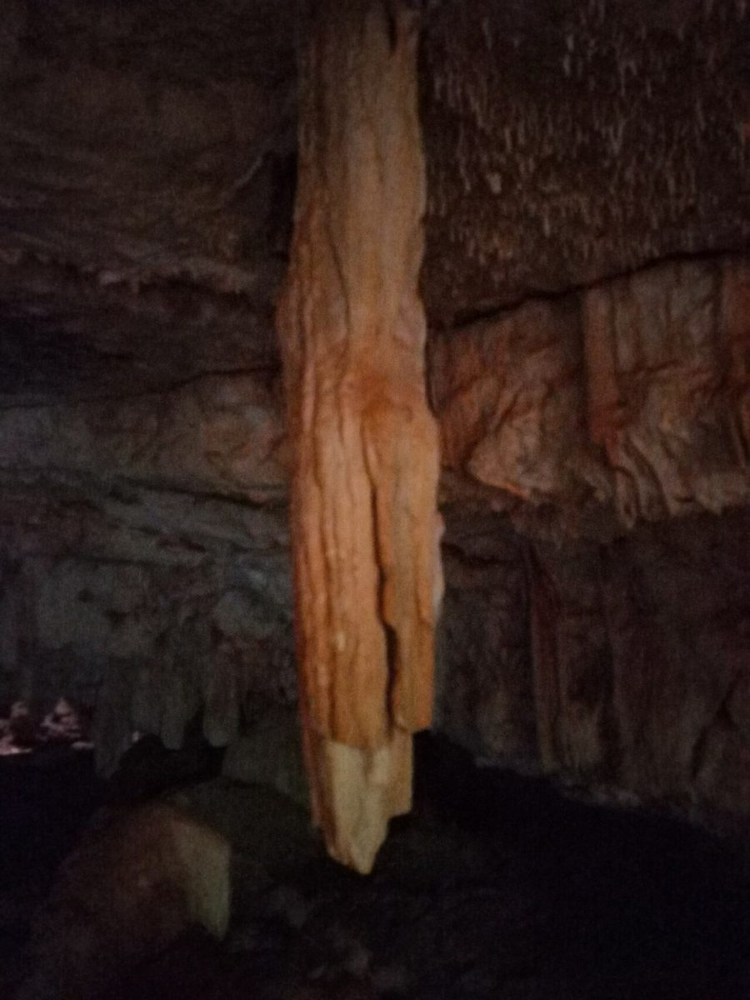

Fl(3)群閃光
光の符号 Fl(3) ・ 10秒周期の見立て
口コミ
三つ続けて光って、少し休む。群閃光の光り方に合わせて、三つのコメントを並べています。

01イメージ例の口コミ
以下の3件は、制作側の創作によるイメージ例です。実在のお客様の投稿ではありません。
- イメージ例1回目の閃光
営業時間などが分かったら、行ってみたいです。それまでは、Instagramの更新を楽しみにしています。
- イメージ例2回目の閃光
いつか行ける日を決めるために、Instagramの投稿をひとつずつ見ていきたいです。
- イメージ例3回目の閃光
メニューや定休日の案内が公開されたら、じっくり読んでみたいです。その日を待っています。
02実際のお声について
実際のお客様のご感想は、お店が許可したものだけを掲載します。
